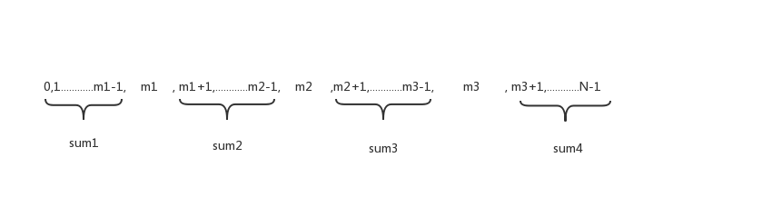

某里JAVA实习在线笔试题
题目
最近学长们在各种投简历，他们在线笔试的时候正好看到一道很有趣的在线笔试题，就自己做了一下，由于没有答案，所以也不知道对不对。
- 1. 对于一个长度为N的整形数组A，数组里所有的数都是正整数，对于两个满足
0<=X<=Y<N的整数，A[X],A[X+1]…A[Y]构成A的一个切片，记作(X,Y)。 - 2. 用三个下标m1,m2,m3满足条件
0<m1,m1+1<m2,m2+1<m3<N-1。 - 3. 可以把这个整数分成
(0,m1-1),(m1+1,m2-1),(m2+1,m3-1),(m3+1,N-1)四个切片。如果这四个切片中的整数求和相等，称作“四等分”。 - 4. 编写一个函数，判断是否可以四等分，如果可以，返回true，否则返回false。
- 5. 限制条件: N <= 1000000，整数范围取值介于 0 到 1000000之间。
- 6. 要求: 时间复杂度O(N)，额外的存储空间最多为O(N);
- 7. 对于数组 A=[2,5,1,1,1,1,4,1,7,3,7]，存在下标2，7，9使得A分成四个切片 [2,5] , [1,1,1,4], [7], [7] 这四个切片求和相等。 对于数组 A=[10,2,11,13,1,1,1,1,1]找不到四等分，所以返回false。
方法
首先，由于约束条件0<m1, m1+1<m2, m2+1<m3<N-1，可知最小值 m1=1, m2=3, m3=5, N>6， 所以对于数组长度小于等于6的返回false。
- 任取满足条件的m1,m2,m3构成四个切片，并且求四个切片的和 sum1, sum2, sum3, sum4 
- 如果 sum1=sum2=sum3=sum4 ,那么说明可以是一个四等分的切片，且 m1,m2,m3 就是结果，跳出迭代
- 如果某次迭代不满足这个条件，我的想法是 消灭最大的sum，也就是将和最大的切片的边缘分配给相邻较小的切片。(切片是相邻的，所以只能分配给相邻的另一个切片)
- 当sum1最大的时候，将m1往左边移1位(m1=m1-1)，此时 sum1 = sum1 - A[m1-1],而 sum2 = sum2 + A[m1]。
- 当sum2最大的时候，切片2的边缘分配给相邻较小的切片。也就是说，当 sum1 > sum3 的时候，分配给sum3,此时 m2=m2-1, sum2 = sum2 - A[m2-1], sum3 = sum3 + A[m2];同理当 sum1 <= sum3 的时候，分配给sum1,方法如上
- 当sum3最大的时候，这种情况和sum2最大类似(都是数组的内部切片)
- 当sum4最大的时候，这种情况和sum1最大类似(都是数组的外部切片)
- 重复步骤2，3
- 失败跳出的条件：最大切片的位置变化进入循环。如1 -> 2 -> 1, 其意义是：当切片1和最大的时候，分配边缘给切片2；当切片2和最大的时候，又将边缘还给了切片1，如此进入死循环。
分析
空间复杂度
除了几个可数的变量以外，没有使用额外的空间，所以空间复杂度为 O(N)
时间复杂度
求sum1-sum4的时候，需要遍历一遍数组，时间花费N
步骤3，其实是在调整m1,m2,m3的位置，它的位置变化最多为N，因为 0<m1<m2<m3<N，而m1,m2,m3只会往一个方向变化，否则就会进入失败的条件。所以时间复杂度为 O(N)
注意
这个方法不一定对，只是我的一个想法
代码
package main;
public class Main {
public static boolean handle(int[] A) {
boolean flag = false;
int m1 = 1, m2 = 3, m3 = 5;
//用数组存比较好，这里为了清楚展示就没用数组
long sum1 = 0, sum2 = 0, sum3 = 0, sum4 = 0;
//用数组存比较好，这里为了清楚展示就没用数组
int latestMax1 = -3, latestMax2 = -2, thisMax = -1;
//用数组存比较好，这里为了清楚展示就没用数组
//latestMax1 上上次取的最大值所在的位置
//latestMax2 上次取的最大值所在的位置
//thisMax 当前的最大值所在的位置
if (A.length <= 6) {
return flag;
}
for(int i = 0; i < A.length; i++) {
if (i >= 0 && i < m1) { //求sum1
sum1 += A[i];
}
if (i > m1 && i< m2) { //求sum2
sum2 += A[i];
}
if (i > m2 && i < m3) { //求sum3
sum3 += A[i];
}
if (i > m3) { //求sum4
sum4 += A[i];
}
}
//以上时间花费 N
while(true) {
if (sum1 == sum2 && sum1 == sum3 && sum1 == sum4) {
flag = true;
break;
}
if (latestMax1 !=latestMax2 && latestMax1 == thisMax) {
//判断失败
flag = false;
break;
}
latestMax1 = latestMax2;
latestMax2 = thisMax;
if (sum1 >= sum2 && sum1 >= sum3 && sum1 >= sum4) {
//sum1 最大
sum1 -= A[m1-1];
sum2 += A[m1];
m1 -= 1; // m1 往左移1位
thisMax = 1;
} else if (sum2 >= sum1 && sum2 >= sum3 && sum2 >= sum4) {
//sum2 最大
if (sum1 > sum3) { //sum1比sum3大的情况
sum2 -= A[m2-1];
sum3 += A[m2];
m2 -= 1;
} else {
sum1 += A[m1];
sum2 -= A[m1+1];
m1 += 1;
}
thisMax = 2;
} else if (sum3 >= sum1 && sum3 >= sum2 && sum3 >= sum4) {
//sum3 最大
if (sum2 > sum4) { //sum2比sum4大的情况
sum4 += A[m3];
sum3 -= A[m3-1];
m3 -= 1;
} else {
sum2 += A[m2];
sum3 -= A[m2+1];
m2 += 1;
}
thisMax = 3;
} else if (sum4 >= sum1 && sum4 >= sum2 && sum4 >= sum3) {
//sum4 最大
sum4 -= A[m3+1];
sum3 += A[m3];
m3 += 1;
thisMax = 4;
}
}
System.out.print(flag);
if (flag) {
System.out.println(",m1=" + m1 + ",m2=" + m2 + ",m3=" + m3);
}
return flag;
}
public static void main(String[] args) {
int A[] = {2,5,1,1,1,1,4,1,7,3,7};
int B[] = {10,2,11,13,1,1,1,1,1};
handle(A);
handle(B);
}
}
输出：
true,m1=2,m2=7,m3=9
false
如我在代码中的注释，用数组去存定义的变量更好，以position去进行if判断，可以减少重复代码，但是我想让代码容易被看懂，所以没用数组，而是枚举if